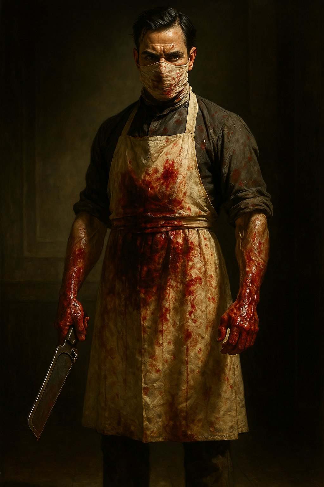

Orphans Hospital Raid
Participants
Overview
The Orphans’ Hospital Raid was the first of two major assaults against Savarin’s operations in Lyon, in July 1814. The party attacked the Orphans’ Hospital to rescue Delaroche’s children, held by Savarin as leverage to control the police commissioner. In the basement, Dr. Carreau was performing surgical modifications on abducted children — inserting steel rods into their throats.
Two PCs died in the assault, both killed by their own side.
The Assault
Augustus and Jacob went in through the front. The rest of the party — the ladies, Moreau, his veterans, Thomas, and Adrien — entered from the back. Blue Sash guards and orderlies fought them through the corridors. Thomas and Adrien were both wounded in the fighting.
When Blue Sash reinforcements arrived, Augustus went out front alone to hold them off — five against one.
The ladies circled the building and volley-fired on the reinforcements from the flank, but it was too late.
PC Deaths
Augustus_Bolt took mortal wounds fighting five Blue Sashes alone. Jacob rushed to save him and critically failed his First Aid check — shoving his thumb into Augustus’s wound, killing him. Jay subsequently took over Colonel Moreau.
Jacob — In the basement, the party found Dr. Carreau mid-surgery on a child, inserting steel rods into the boy’s throat. Five children were locked in cages. Emma shot Carreau. Jacob stabbed Carreau with a sword. Marina was triggered into temporary insanity — she saw her brother where Carreau lay — and she shot Jacob dead. Phil subsequently took over Delaroche.
Other Casualties
- Georgiana took a cleaver to the shoulder from a surgeon’s apprentice.
- Dr. Carreau killed (shot by Emma, stabbed by Jacob).
Aftermath
Over a hundred children were freed from the wards above. Two of Delaroche’s children were among the three unmodified children in the basement cages. The children were escorted to police barracks under Delaroche’s authority. Savarin’s leverage over Delaroche was broken.
Campaign Significance
Two PCs killed in minutes, both by their own side. The emotional and mechanical nadir of the Lyon chapter. The raid triggered character transitions: Jay moved to Moreau, Phil moved to Delaroche.
Hospital Staff

Stat blocks for hospital nurses, orderlies, and Blue Sash guards are in the prep file: Chapters/Chapter 2 - Lyon/Orphans Hospital staff & thugs.md.